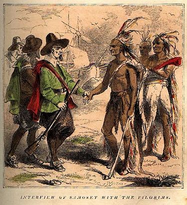

For a timeline of events, see timeline of Colonial America.
"American colonists" redirects here. For other uses, see American colonists (disambiguation).
"Colonial America" redirects here. For other uses, see Colonial America (disambiguation).
"American Colonial Period" redirects here. It is not to be confused with American Colonial Period (Philippines).
The colonial history of the United States covers the history of European colonization of North America from the early 17th century until the incorporation of the Thirteen Colonies into the United States of America, after the War of Independence. In the late 16th century, England, France, Spain, and the Dutch Republic launched major colonization programs in North America. The death rate was very high among early immigrants, and some early attempts disappeared altogether, such as the English Lost Colony of Roanoke. Nevertheless, successful colonies were established within several decades.
European settlers came from a variety of social and religious groups, including adventurers, farmers, indentured servants, tradesmen, and a very few from the aristocracy. Settlers included the Dutch of New Netherland, the Swedes and Finns of New Sweden, the English Quakers of the Province of Pennsylvania, the English Puritans of New England, the English settlers of Jamestown, Virginia, the English Catholics and Protestant Nonconformists of the Province of Maryland, the "worthy poor" of the Province of Georgia, the Germans who settled the mid-Atlantic colonies, and the Ulster Scots of the Appalachian Mountains. These groups all became part of the United States when it gained its independence in 1776. Russian America and parts of New France and New Spain were also incorporated into the United States at later times. The diverse colonists from these various regions built colonies of distinctive social, religious, political, and economic style.
Over time, non-British colonies East of the Mississippi River were taken over and most of the inhabitants were assimilated. In Nova Scotia, however, the British expelled the French Acadians, and many relocated to Louisiana. No civil wars occurred in the Thirteen Colonies. The two chief armed rebellions were short-lived failures in Virginia in 1676 and in New York in 1689–91. Some of the colonies developed legalized systems of slavery,[2] centered largely around the Atlantic slave trade. Wars were recurrent between the French and the British during the French and Indian Wars. By 1760, France was defeated and its colonies were seized by Britain.